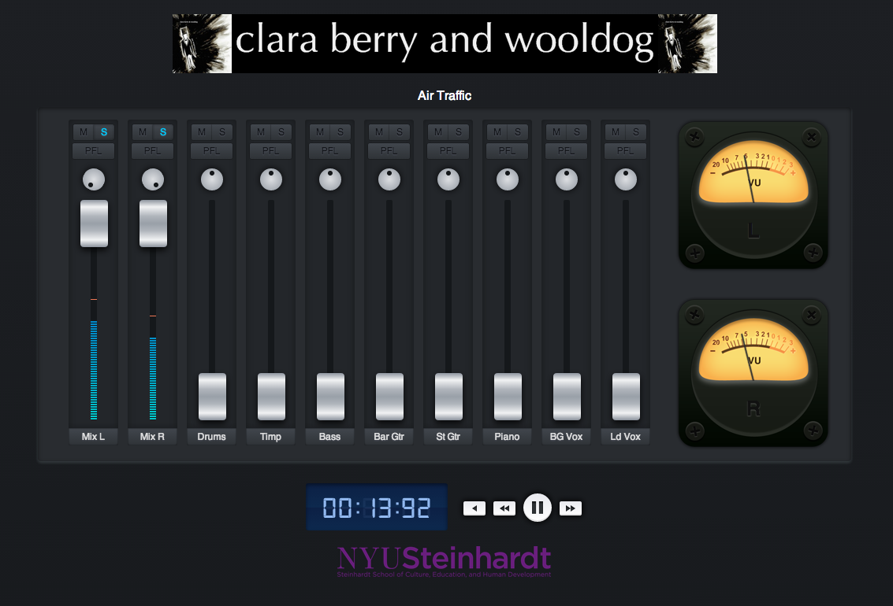
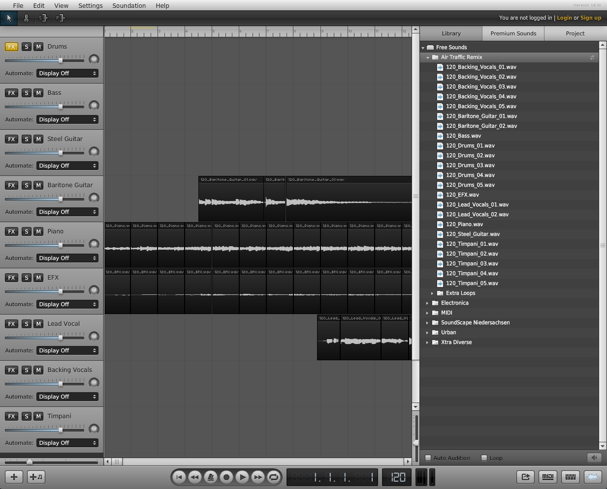

Play With Your Music is a free, online music community where you can find like minded people with whom to create and collaborate, learn to make songs of your very own, and even more using the newest tools on the web. You'll learn the in's and out's of audio production, while working with music you already know and love. Anyone with an interest in making music is welcome, and all you need is a computer and a browser.
Play With Your Music (or #PWYM) is a nifty collabortation between faculty in NYU Steinhardt's Department of Music and Performing Arts Professions [link withheld], Peer 2 Peer University [link withheld] and the MIT Participant 751 Lab [link withheld]. Professor Alex Ruthmann [link withheld] and Research Associate Ethan Hein [link withheld] offer their expertise and musical chops, all brought to you with the social learning design team at P2PU.
How It Works
The PWYM Community
When you join the PWYM Community [link withheld], you'll have access to creative learning and music making modules that focus on audio production and engineering, music theory, film music, and music technology. You'll also be able to find and create groups of creative and curious musicians just like you, with whom you'll learn and collaborate on course projects.
Music making and learning experiences
For each module in a course, you'll receive a series of readings, videos and an activity prompting you to play with music on the web. You'll work through the materials at your own pace, and share your projects with the PWYM community when your finished, and share and receive feedback on your and your peers' creative projects.
Support if you're lost, stuck or curious
Play With Your Music also has an embedded community of like minded musicians and learners for you to ask questions, find additional resources, or connect with other folks outside your areas of musical interest and expertise.
Playing with your music
We've designed the PWYM courses and community in the spirit of musical play. Building on research and tools developed at the MIT Participant 751 Lab and NYU's Music Experience Design Lab, we've designed this community to support creative and collaborative music making, learning, and sharing. We continue to curate multitrack content from musical artists, develop creative tools for playing directly with the recordings you love, and interview leading musicians - performers, engineers, producers, and composers - all granting YOU permission to play and experiment with their music.
The Music You'll Work With
Peter Gabriel
For Play With Your Audio we've partnered with dual Rock and Roll Hall of Fame inductee and legend Peter Gabriel [link withheld]. Peter has graciously collaborated with us providing access to multitrack recordings of his hit songs Sledgehammer [link withheld] and In Your Eyes [link withheld] from the album So. You'll learn from video interviews with Peter and with the musicians who've performed and collaborated with him over the years.
Clara Berry and Wooldog
In our first version of Play With Your Audio, we partnered with singer/songwriter Clara Berry [link withheld] and her producer/engineer Bradford Swanson [link withheld] to give you an inside look at their recording production process. In addition to the amazing recordings of Peter Gabriel, you can work directly with her multitracks, samples, and loops in our custom #PWYA Mix tool and in Soundation.com.
The Tools You'll Master
You'll become familiar with a number of critical listening, recording and mixing tools as you explore the content in the PWYM community. All of these tools are free to use when you sign up. A sneak preview of what's to come:
Google templates for musical analysis
In the first phase of the PWYA course, you'll become familiar with the basic critical listening and recording analysis skills of music--identifying instruments, voices, placement of sound in space, and song structures by ear from recordings. We start you off with identifying and describing the sounds you hear in a recording and locating those sounds in space with a Google Charts template [link withheld]. After that, we guide you in mapping the structure of songs, labeling sections and timings, identifying when instruments come in and come out of a mix, helping you hear, see and understand the hidden architectures within your favorite musical recordings using a Google Spreadsheets template [link withheld].
#PWYA Mix
We've curated a great set of interactive multitrack recordings for you to work with. You can explore and play with the building blocks of recorded music using our simple web-based mixing tool. Work alone or collaboratively on matching the balance levels and panning placement of audio stems in a mix, and share your mix easily with your friends and fellow musicians.

[link withheld]Soundation
Next you'll get your hands dirty by working with a Digital Audio Workstation (DAW) and learn the basics of audio and MIDI editing, mixing and remixing. Using Soundation you'll explore the creative application of Audio FX, and create original mixes and remixes.

[link withheld]SoundCloud
Soon, you'll be remixing your favorite songs and coming up with your own glorious creations. You'll post the files to SoundCloud's listening community, share them with your cohort, and give each other feedback.
Image omitted from this public edition. [link withheld]
Sign Up Now!
Participation in the PWYM Community is ongoing. Sign up now [link withheld] for our next courses.